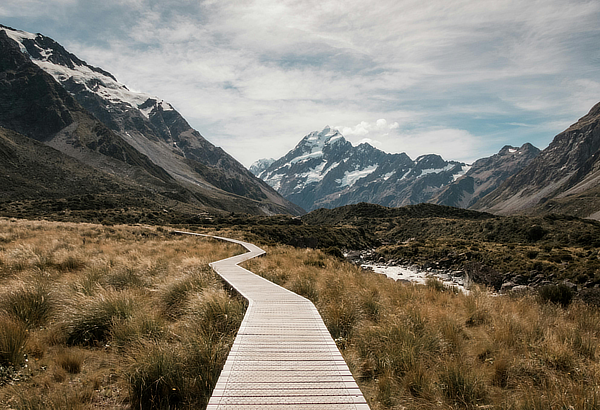

<section class="intro">
  <div class="intro-content">
    <div class="intro-box boxradius">
      <div class="intro-image boxradius">
        
      </div>
      <div class="intro-text">
        <div class="intro-headline">
          <h1>Nachhaltige und barrierefreie Gestaltung</h1>
          <p class="code-style">
            Hi, ich bin Annabelle 👋 Digitale Tüftlerin, Künstlerin & überzeugte
            Verfechterin von menschzentrierter Gestaltung.
          </p>
        </div>
        <p>
          Mit meiner Kreativpower unterstütze am liebsten NGOs und Einrichtungen
          aus der Kulturszene.
        </p>

        <div class="button-wrapper">
          <a
            class="button primary"
            href="mailto:hello@studio-feiler.com?subject=Anfrage&body=Hi Annabelle,"
            aria-label="Annabelle direkt per E-Mail kontaktieren"
            title="Schreib mir eine E-Mail"
          >
            Projekt anfragen
          </a>
        </div>
      </div>
    </div>

    <div class="intro-grid">
      {% for item in site.data.fakten-grid %}
      <div class="intro-grid-box boxradius">
        <div class="intro-grid-zahl">{{item.kennzahl}}</div>
        <div class="intro-grid-text">{{item.beschreibung}}</div>
      </div>
      {% endfor %}
    </div>
  </div>
</section>
